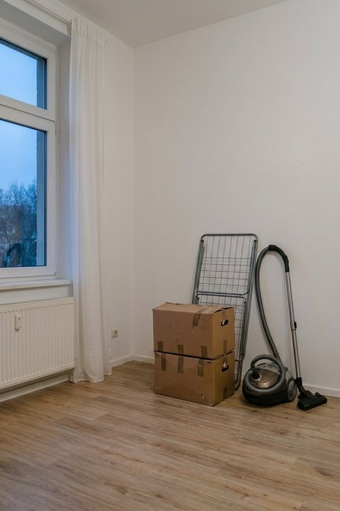
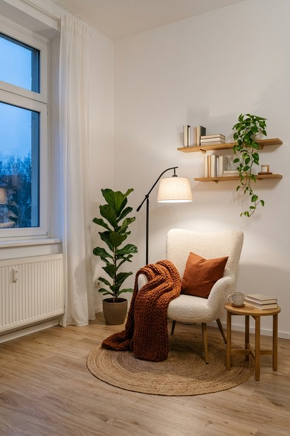

Leseecke vorher/nachher: gemütliche Ecke in 6 Schritten


Fast jede Wohnung hat sie: eine Ecke, in der nur Kartons und der Wäscheständer stehen. Mit sechs Schritten wird daraus der gemütlichste Platz im Zimmer – gerade im Winter, wenn es um 17 Uhr dunkel wird. Die Spar-Version kostet unter 200 €.
Zur Einkaufsliste & den Kosten ↓
Die 6 Schritte
1. Die Ecke frei machen
Kartons, Staubsauger und Wäscheständer brauchen einen anderen Platz – zum Beispiel unter dem Bett oder hinter einer Tür. Ideal ist eine Ecke neben dem Fenster: tagsüber Tageslicht, abends die Lampe.
0 €
2. Ein bequemer Sessel
Das Herz der Leseecke. Ein Sessel mit hoher Rückenlehne, schräg in die Ecke gestellt, wirkt einladender als gerade an der Wand. Bouclé oder Cord in Creme sehen warm aus und passen zu fast allem. Gebraucht über Kleinanzeigen gibt es gute Sessel oft schon ab 40 €.
ca. 80–250 €
3. Eine Bogen- oder Stehlampe
Das Licht macht die Ecke erst gemütlich. Eine Bogenlampe mit Stoffschirm leuchtet von oben über die Schulter aufs Buch. Warmweiße Glühbirne mit 2700 Kelvin nehmen – kaltes Licht wirkt wie im Büro.
ca. 30–70 €
4. Ein kleiner Beistelltisch
Für Tee, Brille und das nächste Buch. Rund und aus Holz wirkt er leicht und nimmt kaum Platz weg. 40–45 cm Durchmesser reichen.
ca. 20–45 €
5. Teppich, Decke und Kissen
Ein runder Juteteppich grenzt die Ecke optisch vom Rest des Zimmers ab. Dazu eine grobe Strickdecke und ein Kissen in Rost oder Terrakotta – die warmen Farben machen den größten Unterschied auf Fotos und im echten Leben.
ca. 45–90 €
6. Wandregale und Pflanzen
Zwei schmale Wandregale über dem Sessel halten die Bücher griffbereit, ohne Platz auf dem Boden zu brauchen. Eine hängende Efeutute oben und eine große Pflanze (z. B. Geigenfeige) am Fenster machen die Ecke lebendig. Wer nicht bohren darf, nimmt ein schmales Bücherregal.
ca. 40–90 €
Einkaufsliste
| Was | Menge | ca. Preis |
|---|---|---|
| Sessel (neu oder gebraucht) | 1 | 80–250 € |
| Bogen- oder Stehlampe mit Stoffschirm | 1 | 30–70 € |
| LED-Glühbirne warmweiß, 2700 K | 1 | 3–6 € |
| Beistelltisch rund, Holz | 1 | 20–45 € |
| Juteteppich rund, ca. 120 cm | 1 | 25–50 € |
| Strickdecke + Kissen | 2 | 20–40 € |
| Wandregale, ca. 60 cm | 2 | 20–40 € |
| Efeutute + große Zimmerpflanze mit Topf | 2 | 20–50 € |
Richtwerte für Deutschland, Stand November 2026. Die Preise schwanken je nach Händler und Saison.
Was kostet die Leseecke?
Spar-Version – unter 200 €: gebrauchter Sessel, Stehlampe, Beistelltisch, Decke und Kissen (ca. 120–200 €).
Komplett wie auf dem Bild – ca. 220–550 €: alles aus der Einkaufsliste.
Tipp: Sessel und Lampe zuerst kaufen. Die beiden machen den Großteil des Vorher/Nachher-Effekts, alles andere kann nach und nach dazukommen.
Häufige Fragen
Wie viel Platz braucht eine Leseecke?
Etwa 1 × 1 m reichen für Sessel und Beistelltisch. Die Lampe steht hinter oder neben dem Sessel und braucht keinen zusätzlichen Platz.
Welches Licht ist am besten zum Lesen?
Warmweißes Licht (2700 K) von schräg hinten oben, damit kein Schatten aufs Buch fällt. Für mehr Stimmung am Abend: 3 Lichtstimmungen im Vergleich.
Geht das auch in einer Mietwohnung ohne Bohren?
Ja. Statt Wandregalen ein schmales Bücherregal oder einen Stapel Bücher auf dem Beistelltisch nehmen – alles andere braucht keine Löcher.